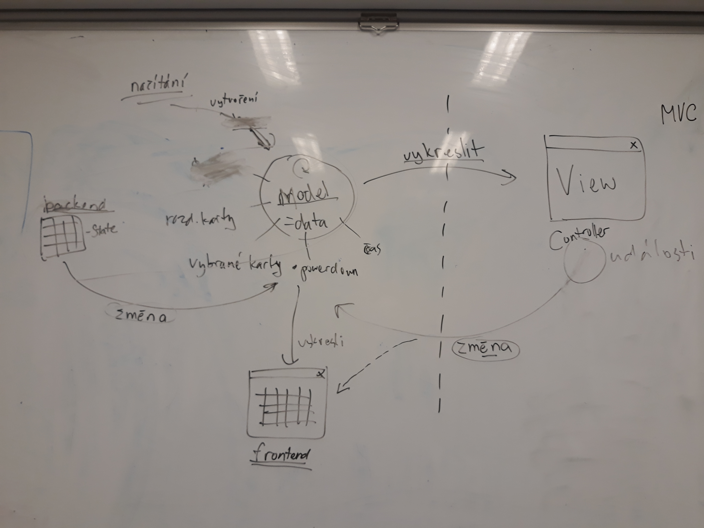

Jedenáctý sraz - MVC a spousta práce
Nejnovější článek
Vzhledem k tomu, že aktuální stav projektu sám generuje další a další úkoly a problémy k řešení, stejně jako schůzka minulá, i toto setkání se na začátku neslo v duchu řešení toho, na co jsme narazily při práci v uplynulém týdnu.
Úspěchem od minulé lekce je, že se roboti zastavují …